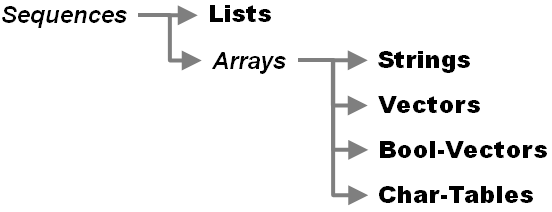

Lesson 2-5 - Arrays (And Sequences)¶
Prerequesite: This lesson presumes you know how to invoke Elisp expression as shown in Lesson 2-1.
Introduction¶
We have seen lists in Elisp. Lists are an example of a sequence - a load of things stored in another thing which we can access sequentially.
There is another type of sequence in Elisp - an array. Arrays themselves come in 2 flavours:
strings
vectors
bool-vector
char-table
The relationship of all these things is shown below:
There are sets of functions that operate on all sequences, some which apply to array’s only and then other sets for the actual data types themselves (lists, strings, vectors, bool-vectors and char-tables).
This lesson will look at:
strings
vectors
The Extra Activities section will cover functions that operate on sequences.
Why Arrays And Not Lists?¶
The difference between arrays and lists is that arrays have fixed lengths and lists have variable length. This gives them different performance characteristics - array elements are accessible in constant time, whereas the access time for lists is proportional to their length.
Difference Between Strings And Vectors¶
In Elisp a string is simply an array whose elements consists of the integers which represent unicode points. A vector is a general array whose elements are any valid Elisp term.
Why Only 1D Arrays?¶
Arrays are 1 dimensional only. Given that the elements of a vector can consist of other valid Elisp symbol, multi-dimensional arrays can be implemented as vectors of vectors.
Creating Arrays¶
A array is delimited by square brackets ([ and ]). You can create them inline:
- You Type
[1 2 3]- Return
[1 2 3]
You can create vectors using the vector operator:
- You Type
(vector 1 2 3)- Return
[1 2 3]
The operator string does the same for strings. To create a string you need array elements that are the integers which represent characters - a full set of unicode values is supported.
- You Type
(string 97 98 99)- Result
"abc"
(96 is ascii for a)
What You Have Learned¶
You have learned about additional types of sequences and see how they are constructed.